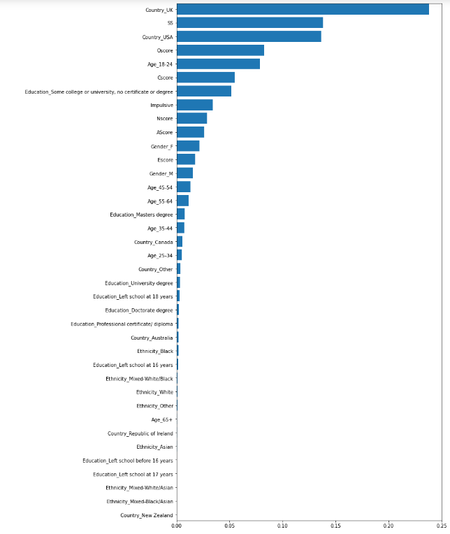

Random Forests Classification
Introduction
Random Forests is a method for classification that utilizes a large quantity of decision trees with the training set. When utilizing Random forests for classification, the output is the class elected by the most "trees."

Source: https://en.wikipedia.org/wiki/Random_forest#/media/File:Random_forest_diagram_complete.png
Results
The Random Forests models were generated with the Ptyhon library scikit-learn from the ensemble method. Initially the model was outputting a 1.0 training score which indicated that the model was being overfitted. In order to avoid this issue, the max_depth parameter of the model was modified to create a better result. The max_depth parameter essentially tells the model how in depth it should go to find the answer it is looking for. By default, there is no max_depth unless specified in the Random Forest model, so a potential result of this is an overfit dataset.
All Features Model
In the Random Forest classification models, all of the drug specific columns were dropped from the dataset leaving just the illegal_use column which is indicated by a 0 or a 1. The 0 indicates no drug use within the last year and 1 indicates the participant had used an illegal drug in the last year. For the first attempt, all of the attributes were kept in the dataset except for the ID. As mentioned, the max_depth parameter was modified such that testing score was optimized and such that the training score was below 1.0. This resulted in choosing max_depth of 10, and the below training and test scores were achieved respectfully:
Training Data Score: 94.5%
Testing Data Score: 83.4%
A feature importance plot was generated to see if it might be worth removing some attributes from the model. In the below image, it is clear that the models most important feature is the Country origin of the UK. This makes sense given that 731 of the 1,043 UK participants had not used illegal drugs in the last year, and 312 participants had used illegal drugs in the last year. With a testing accuracty around 82% as listed above, the UK attribute split is relatively close to the model accuracy. Also seen in the image is that the ethnicities were not important relatively speaking. Even the white ethnicity attribute which consisted of over 1700 of the participants was the 10th lowest out of the 38 attributes being used in this first attempt.
Remove Ethnicity Attribute
With the ethnicity attribute removed, the model was ran again. The max_depth parameter was modified again to achieve an optimal testing score, and resulted in choosing a max_depth of 11. This generated a slightly lower traning score at 96.0% and nearly identical test score at 83.2% . Below are the results:
Training Data Score: 96.0%
Testing Data Score: 83.2%
Remove Ethnicity and Country Attribute
With the Country-UK attribute being the most important feature, we removed it from the dataset out of curiousity. This model removed ethnicity and country, and a max_depth of 6 was utilized to achieve an optimal testing score. The generated a lower scores again with a traning score at 83.5% and test score at 80.8% . Below are the results:
Training Data Score: 83.5%
Testing Data Score: 80.8%